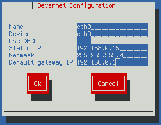

stderr
Jakub Jedelský


Zkroť si svůj cron
V tomto krátkém článku nechci popisovat funkci cronu ani práci s ním, to si ostatně můžete najít třeba na wikipedii. Chci zde jen ve třech jednoduchých bodech zdůraznit maličkosti, které by mohly usnadnit práci jak uživatelům, tak adminům. Ale pozor, ne vše může všude fungovat - změny konzultujte s dokumentací svého systému.
-
Přehledné plánování: používejte "dělení" a "od-do". Teď budu trošku přehánět, ale předtavte si, že chcete spouštět úlohu každý druhý měsíc, v pracovní dny, po 8 hodinách a každých 5 …
Synchronizace e-mailových účtů (IMAP)
Většina uživatelů se ke svým e-mailům nedostane jinak než přes protokol
POP3 nebo IMAP (což vlastně úplně stačí). Problém nastává ve chvíli, kdy
chceme e-maily zálohovat, synchronizovat nebo migrovat jinam. Hodní
správcové nám můžou někam nahrát např. tarball, příp. data zkopírovat
pomocí rsync.
Pokud jste ale na takové nenarazili (nebo je nechcete
otravovat, protože mají fakt hodně práce :)), bude se Vám hodit utilitka
napsaná v perlu - imapsync. Výhodou je, že ji nemusíte spouštět ani na
jednom ze serverů, můžete tak …
Vsftpd a pasivní mód FTP
Vsftpd je jednoduchý FTP server, jehož kódy jsou poskytovány pod licencí GPL. Najdete jej snad již ve všech linuxových distribucích a pomocí něj beží např. i ftp.redhat.com. Proč? Rychlý, bezpečný, stabilní a s jednoduchou konfigurací. Pro jednodušší řešení jak dělaný.
Aktivní vs. pasivní mód (režim)
Z wikipedie:
Aktivní režim
Na portu TCP/20 jsou přenášena data (data connection). V aktivním režimu navazuje připojení pro přenos dat server, klient naslouchá. Problém zpravidla nastává v případě, kdy se klient připojuje …
CentOS (Red Hat): nastavení rozsahu pro větší počet IP
Máte-li ve správě server (desktop) založený na distribuci Red Hat (Centos, Fedora, jánevímco), může Vám přijít vhod tip, jak jednoduše nastavit rozsah pro větší počet IP adres. Pracujeme v příkazové řádce.

Běžně se
používá utilita system-config-network-tui (viz obrázek výše), kde si vše můžete pěkně a
přehledně zapsat do předpřipravených políček. Znalejší prostředí mohou
upravovat přímo konfiguraci, která je k nalezení v
/etc/sysconfig/network-scripts a je přehledně pojmenovaná
ifcfg-eth0:X, kde X je alias pro zařízení eth0. Tato konfigurace pro …
SEO po česku (Domain Report 2009)
Sdružení CZ.NIC (správce naší národní domény .cz) vydalo Domain Report za rok 2009 (pdf). Mimo jiného se zde dočtete, jaké jsou nejdelší české domény:
vozik-voziky-vysokozdvizny-vysokozdvizne-manipulacni-technika.cz
aagtechnic-tesneni-a-tesnici-materialy-nove-mesto-nad-metuji.cz
ubytovani-znojmo-znojemsko-havraniky-penzion-penziony-saldorf.cz
sex-hublist-seznam-java-hry-zdarma-video-reality-seznamka-mp3.cz
detsky-tabor-lyzovani-hory-hry-tabory-snowboard-lyze-dovolena.cz
primy-prodej-seminare-knihy-skoleni-mlm-multi-level-marketing.cz
bio-alkohol-krb-gel-elektricke-plynove-etanol-krby-bez-komina.cz
verold-hradec-kralove-automobily-osobni-prodej-hradec-kralove.cz
Nepřipadá vám to jako dokonalé SEO?
A ještě bych rád vypíchnul jedno zajímavé info: na to, že IPv4 mají každou chvílí dojít (blog CZ.NIC), je nasazení IPv6 téměř nulové, viz:
- IPv6 DNS servery - podíl 3.53%
- IPv6 mail …
- « předchozí
- další »